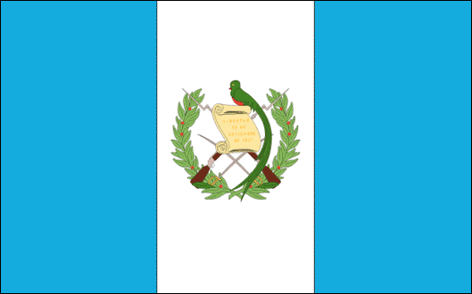
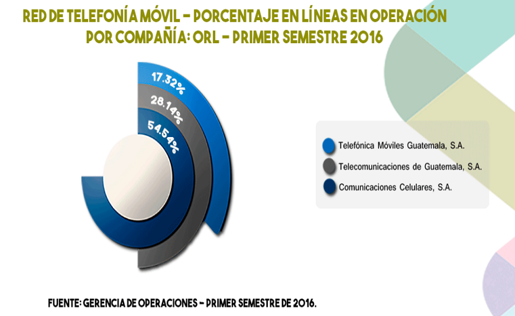
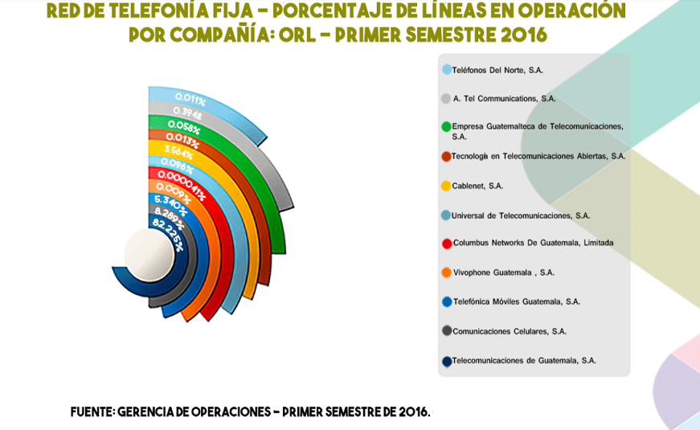
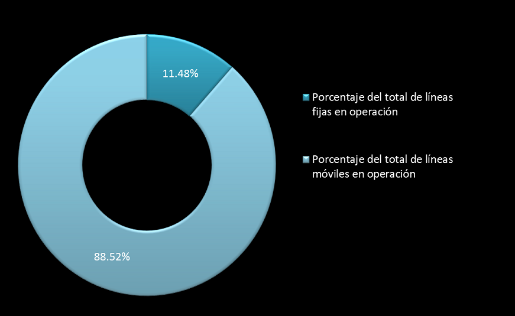
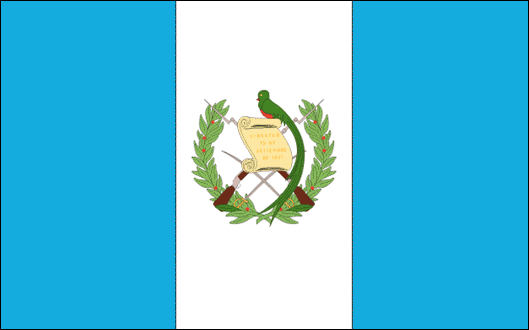
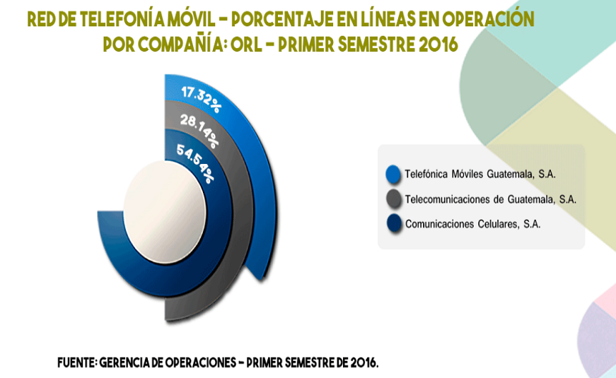
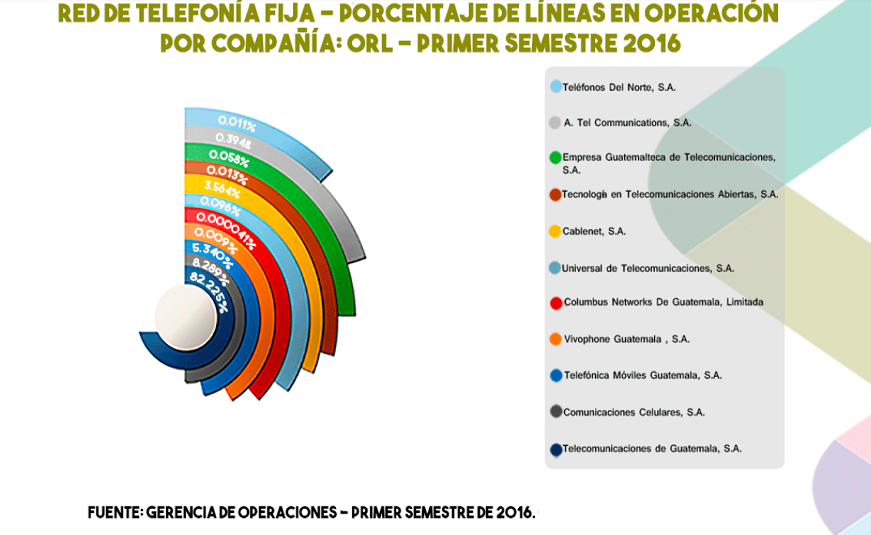
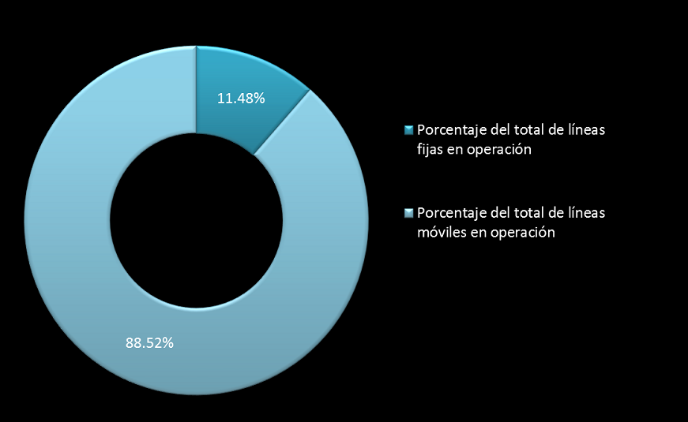

GUATEMALA
ESTADÍSTICAS
LÍNEA MÓVIL EN OPERACIÓN LÍNEA FIJA EN OPERACIÓN
 PORCENTAJE EQUIVALENTE DE LINEAS EN OPERACIÓN
ENTIDAD REGULADORA


GUATEMALA
LÍNEA MÓVIL EN OPERACIÓN LÍNEA FIJA EN OPERACIÓN
 PORCENTAJE EQUIVALENTE DE LINEAS EN OPERACIÓN
